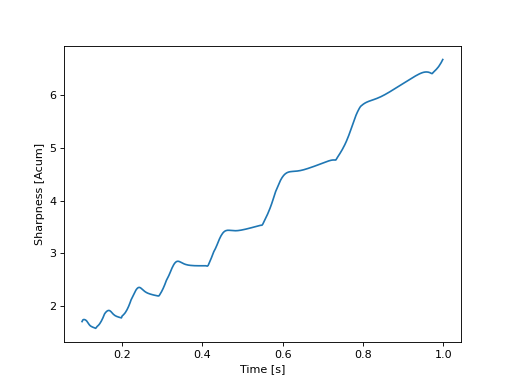

- sharpness_din_tv(signal, fs, weighting='din', field_type='free', skip=0)[source]#
Returns the sharpness value
This function computes the sharpness value along time according to different methods.
- Parameters:
signal (array_like) – Input time signal in [Pa], dim (nperseg, nseg)
fs (float) – Sampling frequency
weighting ({'din', 'aures', 'bismarck', 'fastl'}) – Weighting function used for the sharpness computation. Default is ‘din’
field_type ({'free', 'diffuse'}) – Type of soundfield. Default is ‘free’
skip (float) – Number of second to be cut at the beginning of the analysis to skip the transient effect. Default is 0
- Returns:
S (numpy.array) – Sharpness value in [acum], dim (nseg)
time_axis (numpy.array) – Time axis in [s]
See also
sharpness_din_from_loudnessSharpness computation from loudness values
sharpness_din_stSharpness computation for a stationary time signal
sharpness_din_persegSharpness computation by time-segment
sharpness_din_freqSharpness computation from a sound spectrum
Warning
The sampling frequency of the signal must be >= 48 kHz to fulfill requirements. If the provided signal doesn’t meet the requirements, it will be resampled.
Notes
For each time frame considered, the computation consists of a specific loudness weighting employing a weighting function \(g(z)\):
\[S=0.11\frac{\int_{0}^{24Bark}N'(z)g(z)\textup{dz}}{N}\]with \(N'\) the specific loudness and \(N\) the global loudness.
- The different methods available with the function account for the weighting function applied:
DIN 45692 : weighting defined in the standard
Aures
Bismarck
Fastl
References
[DIN45692200909]DIN.45692:2009. Measurement technique for the simulation of the auditory sensation of sharpness. Deutsches Institut fur Normung, 2009. URL: https://www.normadoc.com/english/din-45692-2009-08.html?___from_store=french.
[EZwickerHFastl07]E.Zwicker and H.Fastl. Psychoacoustics. Springer Berlin, 2007. URL: https://link.springer.com/book/10.1007/978-3-540-68888-4.
[vB74]E. von Bismarck. Sharpness as an attribute of the timbre of steady sounds. Acta Acustica, 1974. URL: https://www.ingentaconnect.com/contentone/dav/aaua/1974/00000030/00000003/art00006.
Examples
>>> from mosqito.sq_metrics import sharpness_din_tv >>> import matplotlib.pyplot as plt >>> import numpy as np >>> fs=48000 >>> d=1 >>> dB=60 >>> time = np.arange(0, d, 1/fs) >>> f = np.linspace(1000,5000, len(time)) >>> stimulus = 0.5 * (1 + np.sin(2 * np.pi * f * time)) >>> rms = np.sqrt(np.mean(np.power(stimulus, 2))) >>> ampl = 0.00002 * np.power(10, dB / 20) / rms >>> stimulus = stimulus * ampl >>> S, time_axis = sharpness_din_tv(stimulus, fs=fs, skip=0.1) >>> plt.plot(time_axis, S) >>> plt.xlabel("Time [s]") >>> plt.ylabel("Sharpness [Acum]")
(Source code, png, hires.png, pdf)

{kind=link}
{kind=link}